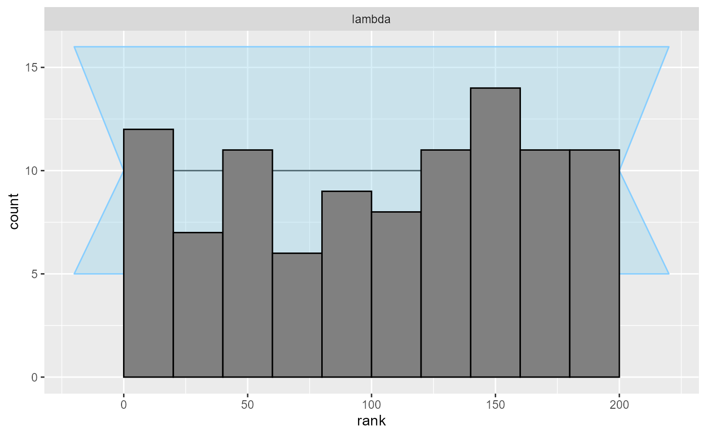
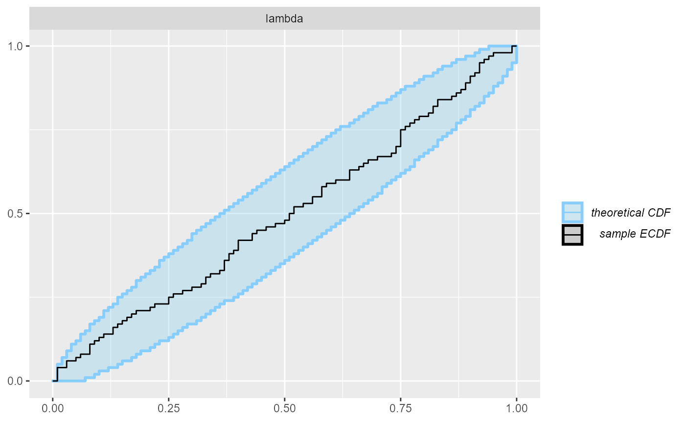
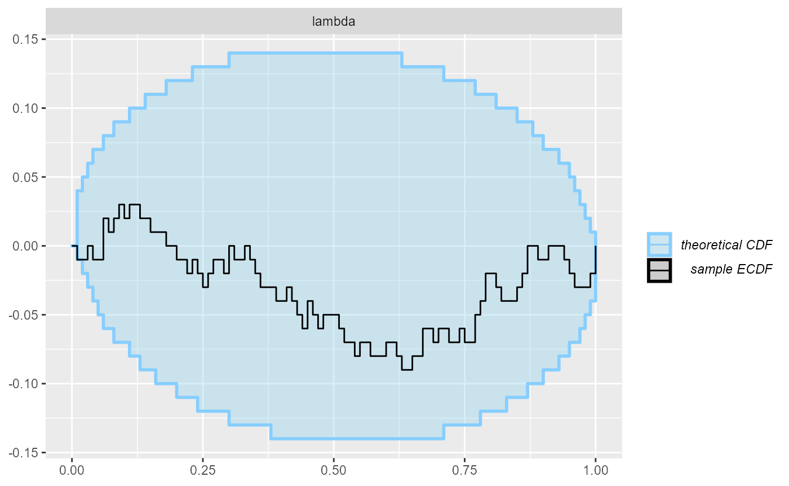

basic_usage.RmdSBC aims to extend rstan::sbc() to include support for new Simulation Based Calibration algorithms without the user having to hassle with sampling or standardizing input/output. It provides utility functions which can ease sampling prior/posterior predictive distributions, along with generic SBC plots, experimental features such as bootstrap/jacknife sampling, and integral probability metric based tests.
This vignette will demonstrate how the basic package interface can be used to generate multiple SBC samples to calculate ranks.
The package is largely split into two components, SBC_datasets and Backend objects. SBC_datasets objects hold the simulated prior and data samples, which are then used during SBC to fit the model. Instead of directly creating a dataset object, users may define a Generator function that returns the parameters and simulated data for a single iteration. SBC can take the function and generate a dataset object for you through repeated calls of the Generator. Please refer to here for detailed specifications of SBC_datasets and Generator functions.
Overview of the package structure
Once the SBC_datasets is prepared and loaded with the true prior and simulated data samples, SBC uses a Backend object to actually fit the model to the simulated data and generate posterior samples. In short, Backend bunches together the desired platform in which inference is ran(cmdstanr, rstan, brms, pymc, etc.), the model, and additional platform-specific inference parameters which are necessary to run inference for the model-platform combination (e.g. number of iterations, initial values, …).
Once the SBC_datasets and Backend objects are set up, running SBC and viewing results becomes as simple as a few function calls, greatly reducing the hassle with having to deal with extracting posterior draws and calculating results. Additionally, the results are stored in posterior::rvars format, which allows for easy manipulation and rapid calculation of additional metrics of interest.
In this vignette we will demonstrate how the interface is used with a simple poisson regression model. First we’ll setup and configure our environment.
library(SBC);
use_cmdstanr <- TRUE # Set to false to use rstan instead
if(use_cmdstanr) {
library(cmdstanr)
} else {
library(rstan)
}
options(mc.cores = parallel::detectCores())
# Enabling parallel processing via future
library(future)
plan(multisession)
# The fits are very fast,
# so we force a minimum chunk size to reduce overhead of
# paralellization and decrease computation time.
options(SBC.min_chunk_size = 5)
# Setup caching of results
cache_dir <- "./basic_usage_SBC_cache"
if(!dir.exists(cache_dir)) {
dir.create(cache_dir)
}We will be running SBC against a model that defines y ~ Poisson(lambda), where lambda ~ Gamma(15, 5). We will be using cmdstanr as the backend with the following model code:
data{
int N;
int y[N];
}
parameters{
real<lower = 0> lambda;
}
model{
lambda ~ gamma(15, 5);
y ~ poisson(lambda);
}
if(use_cmdstanr) {
cmdstan_model <- cmdstanr::cmdstan_model("stan/poisson.stan")
} else {
rstan_model <- rstan::stan_model("stan/poisson.stan")
}Once we have defined the model, we can create a Generator function which will generate prior and data samples:
# A generator function should return a named list containing elements "parameters" and "generated"
poisson_generator_single <- function(N){ # N is the number of data points we are generating
lambda <- rgamma(n = 1, shape = 15, rate = 5)
y <- rpois(n = N, lambda = lambda)
list(
parameters = list(
lambda = lambda
),
generated = list(
N = N,
y = y
)
)
}As you can see, the Generator returns a named list containing randomly samples from the prior and generated data realized from the prior samples.
SBC_Datasets from GeneratorSBC provides helper functions SBC_generator_function and generate_datasets which takes a Generator function and creates a benign `SBC_datasets’ object.
n_datasets <- 100 # Number of SBC iterations to run
poisson_generator <- SBC_generator_function(poisson_generator_single, N = 40)
poisson_dataset <- generate_datasets(
poisson_generator,
n_datasets)Backend
Once we have the model compiled we’ll create a Backend object from the model. SBC includes pre-defined Backend objects for HMC sampling with cmdstan and rstan. In addition, it also provides generator function and Backend for brms based models.
Note that you can create your own Backend if you wish to use a different sampling/optimization platform, such as variational inference or JAGS. For further information on Backend specifications, please refer to here.
Here we’ll just use the pre-defined cmdstan Backend, in which we pass our compiled model and any additional arguments we would like to pass over to cmdstanr::sampling:
if(use_cmdstanr) {
poisson_backend <- SBC_backend_cmdstan_sample(
cmdstan_model, iter_warmup = 1000, iter_sampling = 1000, chains = 2)
} else {
poisson_backend <- SBC_backend_rstan_sample(
rstan_model, iter = 2000, warmup = 1000, chains = 2)
}we can then use compute_results to fit our datasets with the backend:
results <- compute_results(poisson_dataset, poisson_backend,
cache_mode = "results",
cache_location = file.path(cache_dir, "results"))## Cache file exists but the datasets hash differs. Will recompute.Here we also use the caching feature to avoid recomputing the fits when recompiling this vignette. In practice, caching is not necessary but is often useful.
We can now inspect the results to see if there were any errors and check individual stats:
results$stats## # A tibble: 100 x 15
## dataset_id parameter simulated_value rank z_score mean median sd mad
## <int> <chr> <dbl> <dbl> <dbl> <dbl> <dbl> <dbl> <dbl>
## 1 1 lambda 4.06 114 0.212 3.99 3.98 0.307 0.316
## 2 2 lambda 3.63 127 0.303 3.55 3.54 0.280 0.284
## 3 3 lambda 4.44 107 -0.0393 4.45 4.44 0.318 0.316
## 4 4 lambda 4.13 177 1.20 3.79 3.79 0.284 0.281
## 5 5 lambda 3.11 156 0.914 2.87 2.86 0.260 0.248
## 6 6 lambda 2.41 188 1.39 2.12 2.11 0.210 0.204
## 7 7 lambda 2.52 178 1.33 2.21 2.21 0.231 0.230
## 8 8 lambda 2.97 75 -0.219 3.02 3.02 0.262 0.255
## 9 9 lambda 2.71 90 -0.180 2.75 2.75 0.246 0.245
## 10 10 lambda 2.10 0 -2.73 2.78 2.77 0.250 0.242
## # ... with 90 more rows, and 6 more variables: q5 <dbl>, q95 <dbl>, rhat <dbl>,
## # ess_bulk <dbl>, ess_tail <dbl>, max_rank <int>And finally, we can plot the rank distribution to check if the ranks are uniformly distributed. We can check the rank histogram and ECDF plots:
plot_rank_hist(results)
plot_ecdf(results)
plot_ecdf_diff(results)
Since our simulator and model do match, we see that the plots don’t show any violation.